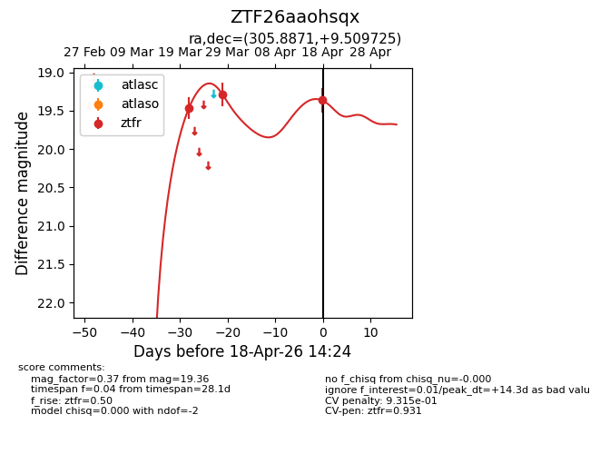
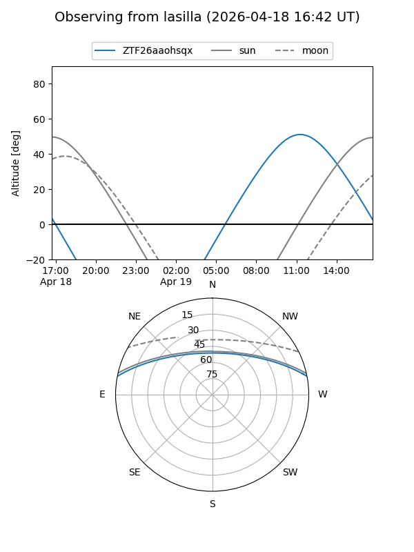
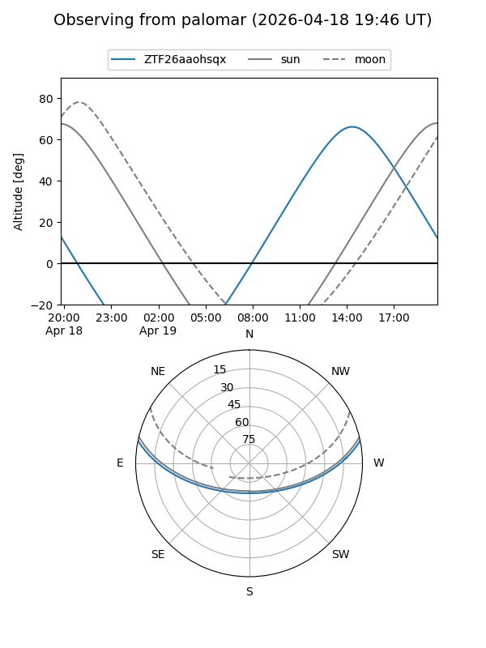
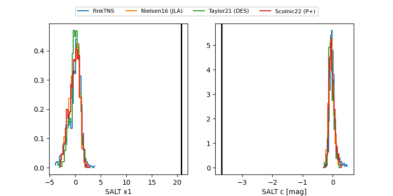

ZTF26aaohsqx
Target ZTF26aaohsqx at 2026-04-18 14:30
Aliases and brokers:
FINK: link
Lasair: link
ALeRCE: link
alt names
ZTF26aaohsqx (ztf,fink_ztf)
Coordinates:
equatorial (ra, dec) = 305.8871,+9.50973
equatorial (HMS+DMS) = 20:23:32.90,+09:30:35.01
galactic (l, b) = (52.5180,-15.54656)
Flags:
likely cv
Photometry:
last ztfr=19.36
3 ztfr detections
Lightcurve

Visibility


Additional plots
